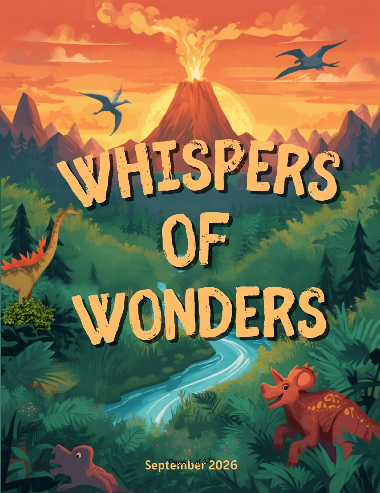
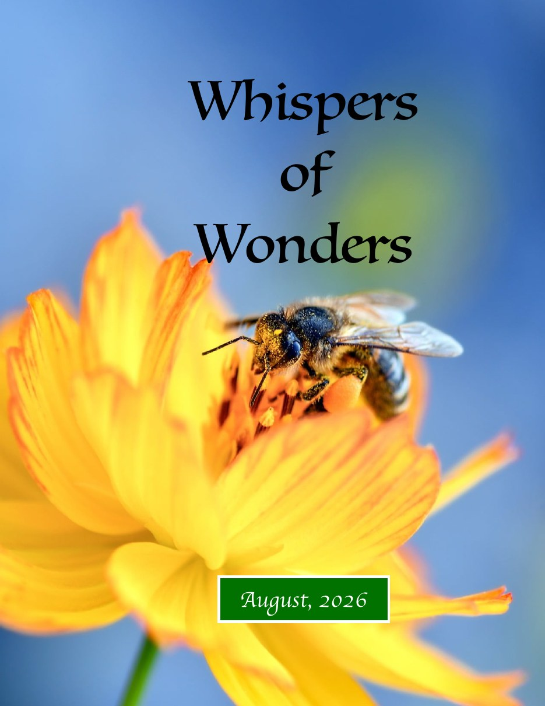
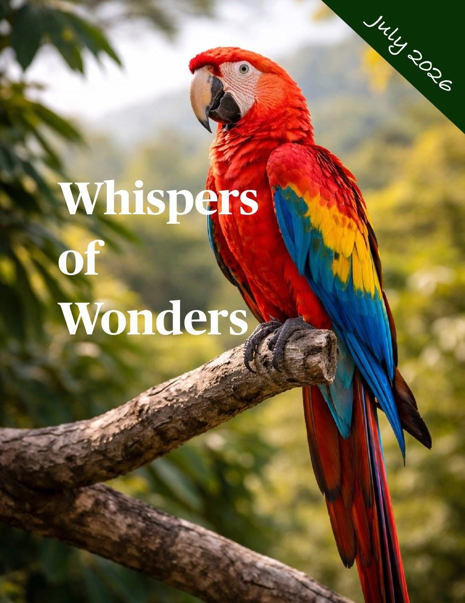
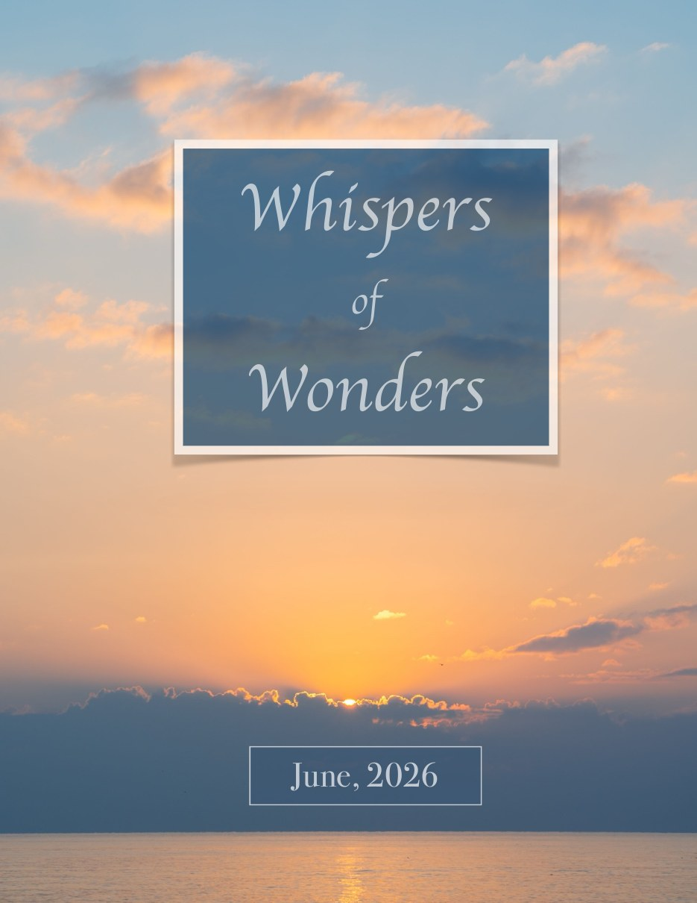
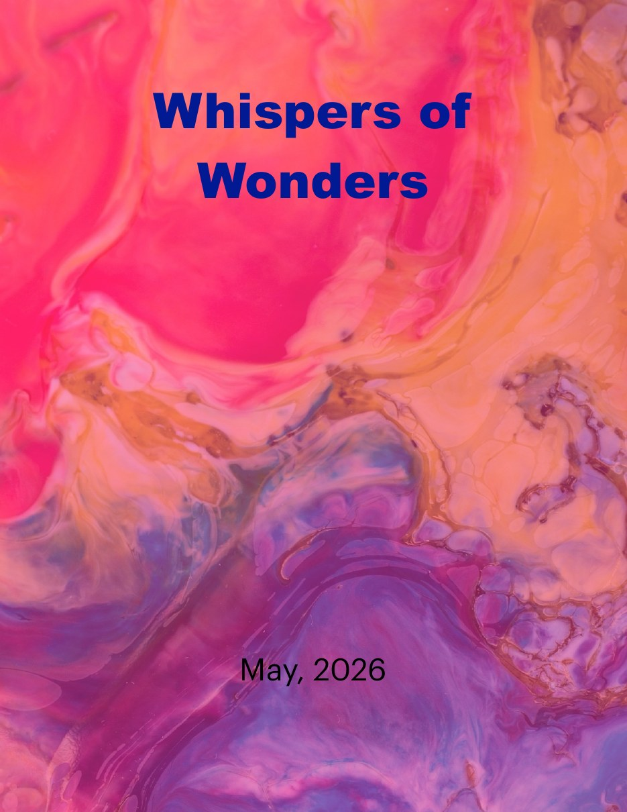

Ask
Start with a real question.
ASK · WONDER · DISCOVER · CREATE
An independent children's magazine shaped by young questions, young voices and the people who help us explore an astonishing world.

LATEST ISSUE
Young contributors explore dinosaurs, fossils, mammoths, ancient humans and the night sky—alongside conversations with scientists who study our distant past.
Open September issue →ABOUT US
Whispers of Wonders is built around children's curiosity. Young contributors write, draw, investigate, invent puzzles and ask experts the questions they genuinely want answered. Adults help with research, editing and phrasing—but the curiosity belongs to the children.
Start with a real question.
Explore science, nature, history, books and culture.
Turn discoveries into stories, art and activities.
Bring children's questions to authors, scientists and experts.
CONVERSATIONS
Our questions often lead beyond books and into conversations with people who have spent their lives exploring the subject.
PALEOANTHROPOLOGY · SMITHSONIAN
Young readers asked about human origins, fossils, ancient diets and what it is really like to investigate our distant past.
Read the interview →Opens at the introduction to Dr. Pobiner's conversation.PALEOANTHROPOLOGY · GEORGE WASHINGTON UNIVERSITY
A conversation about fossils, ancient environments, fieldwork and how scientists reconstruct worlds that vanished millions of years ago.
Read the interview →Opens at the first page of Dr. Barr's interview.“The best questions are often the ones children are not afraid to ask.”
YOUNG VOICES
Questions, observations and explorations of the world around us.
Articles, stories, book reflections and imaginative adventures.
Drawings, paintings, photography and visual storytelling.
Mazes, riddles, mysteries and challenges made for curious minds.
THE ARCHIVE
Our journey began in May 2026. Each month opens a new door for curiosity.
Dinosaurs, fossils, human origins and ancient worlds.
Read issue →
Nature, teamwork, perseverance, space and creativity.
Read issue →
Animals, space, discoveries, creativity and a conversation with a pilot.
Read issue →
Curiosity, discoveries and creative adventures.
Read issue →
The very first issue of Whispers of Wonders.
Read issue →WHERE CURIOSITY TAKES US
We rarely know where a child's first question will lead. That's the point.